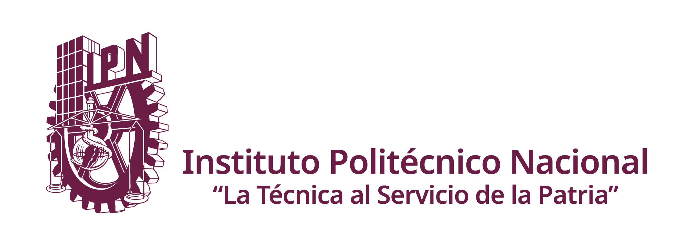
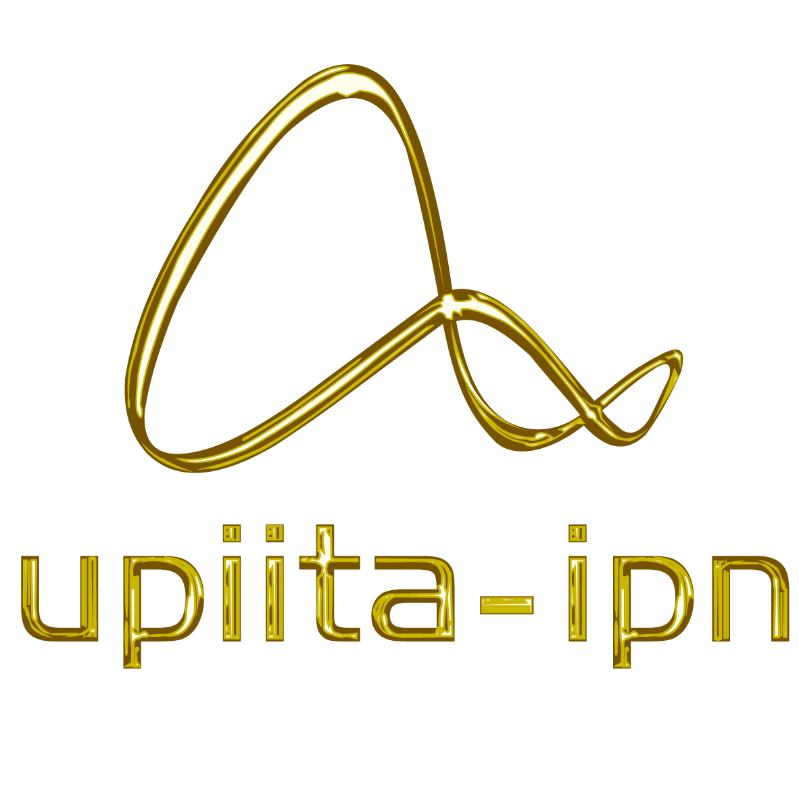

Versión de prueba: lo que agregues aquí no se publica
Grupos de WhatsApp
Directorio de grupos de clase de la UPIITA · Oferta 2027/1
Los enlaces que agregues se ven al momento en tu navegador y para todos en unos minutos.




Directorio de grupos de clase de la UPIITA · Oferta 2027/1
Los enlaces que agregues se ven al momento en tu navegador y para todos en unos minutos.